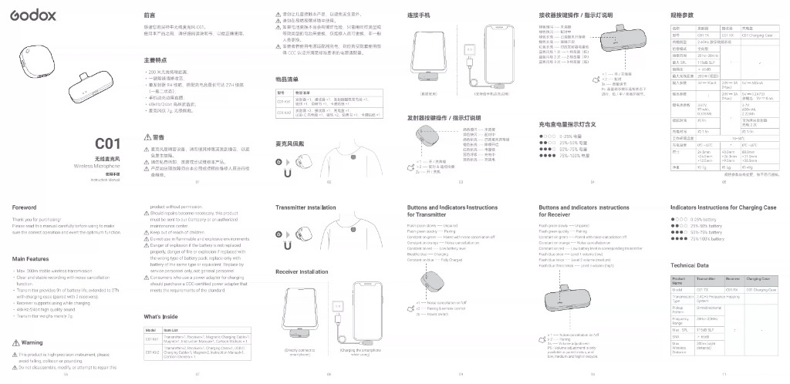

Godox C01 無線麥克風 使用指南
專為手機拍攝與影音創作打造的超輕量雙通道無線麥克風系統。具備隨插即用、智慧一鍵降噪、磁吸隨心配戴與手機邊充邊用支援。
7g
發射器淨重
200m
視距無線傳輸
9h / 27h
單次 / 含盒續航
48kHz
24-bit 廣播音質
Transmitter Controls
發射器 (TX) 按鍵與指示燈
按 1 下 (×1)
開啟 / 關閉 降噪
切換人聲降噪演算法。開啟時濾除風噪與環境雜音，指示燈轉為橙色長亮；關閉時為綠色長亮。
按 2 下 (×2)
配對模式 & 遙控拍攝
未連接時雙擊進入快閃配對；連線狀態下連按兩下，支援部分手機/相機作為遠端快門拍照錄影。
長按 2 秒 (2s)
開機 / 關機
手動控制電源開關。從充電盒取出通常會自動開機，放入充電盒會自動關機並充電。
綠燈慢閃 — 未連接 (Unpaired)
等待接收器訊號中
綠燈快閃 — 配對中 (Pairing)
正在搜尋頻道
綠燈長亮 — 已連接（降噪關閉）
高保真原音模式
橙燈長亮 — 降噪開啟 (Noise Reduction ON)
過濾環境噪音
紅燈長亮 — 低電量提示 (Low Battery)
請盡快放入充電盒
藍燈呼吸 — 充電中 (Charging)
約需 1 小時充飽
藍燈長亮 — 已充飽電 (Fully Charged)
單次續航達 9 小時
Receiver Controls
接收器 (RX) 按鍵與指示燈
按 1 下 (×1)
開啟 / 關閉 降噪
從手機端直接遙控切換麥克風的降噪開關。
按 2 下 (×2)
配對模式
進入配對頻道，重新綁定發射器。
長按 3 秒 (3s)
音量調節（低 / 中 / 高 循環）
僅在配對連線狀態下有效。長按可在三檔音量循環切換，由藍燈閃爍次數反饋。
綠燈慢閃 — 未連接 (Unpaired)
請確認發射器開機
綠燈快閃 — 配對中 (Pairing)
配對進行中
綠燈長亮 — 已連接（降噪關閉）
就緒可錄音
橙燈長亮 — 降噪開啟 (Noise Reduction ON)
降噪生效中
紅燈長亮 — 發射器低電量警告
提醒對應麥克風充電
藍燈閃爍 1~3 次 — 音量檔位反饋
• 閃 1 次：1 檔 (低音量) ｜ • 閃 2 次：2 檔 (中音量) ｜ • 閃 3 次：3 檔 (高音量)
長按 3s 切換
Battery & Case
充電盒 4 顆 LED 電量對照
0% ~ 25%
25% ~ 50%
50% ~ 75%
75% ~ 100%
Setup & Wearing
手機連接與磁吸佩戴
Step 1
接收器直插手機
將接收器 (RX) 直接插入手機底部 Type-C 或 Lightning 連接埠，免裝 App、免開藍牙，即插即用。
Step 2
邊充邊用支援
若手機長時間錄影電量告急，可將原廠手機充電線直接插上接收器側面的 Type-C 孔，實現邊錄音邊為手機快充。
Step 3
磁吸無感佩戴
發射器背後自帶磁吸，搭配附贈的小磁鐵片隔著衣物吸附，僅 7g 輕盈無拉扯感，隱形出鏡。
Technical Specifications
規格參數
| 項目 | 發射器 (C01 TX) | 接收器 (C01 RX) | 充電盒 (Case) |
|---|---|---|---|
| 型號 | C01 TX | C01 RX | C01 Case |
| 傳輸系統 | 2.4GHz 數位跳頻系統 (FHSS) | - | |
| 指向特性 | 全指向 (Omnidirectional) | - | - |
| 頻率響應 | 20Hz ~ 20kHz | - | - |
| 最大聲壓級 | 115dB SPL | - | - |
| 信噪比 | > 65dB | - | - |
| 傳輸距離 | 200 米 (無障礙視距) | - | |
| 電池容量 | 3.7V 97mAh (0.36Wh) | 手機供電 (無電池) | 3.7V 600mAh (2.22Wh) |
| 電池續航 | 約 9 小時 | 隨插即用 | 可充兩隻發射器 2 次 |
| 充電時間 | 約 1 小時 | - | 約 1.5 小時 |
| 外觀尺寸 | 24.5 × 26.5 × 12.5 mm | 40.0 × 26.3 × 9.5 mm | 68.0 × 31.0 × 35.5 mm |
| 淨重 | 約 7g | 約 5g | 約 49g |
Package Contents
包裝物品清單
| 套裝版本 | 內附配件 |
|---|---|
| C01 Kit1 (一拖一) | 發射器 ×1、接收器 ×1、加長雙頭充電線 ×1、磁鐵 ×1、說明書 ×1、卡通貼紙 ×1 |
| C01 Kit2 (一拖二) | 發射器 ×2、接收器 ×1、充電盒 ×1、USB-C 充電線 ×1、磁鐵 ×2、說明書 ×1、卡通貼紙 ×1 |
Original Documentation
原廠摺頁手冊掃描圖

🔍 點擊查看原廠高解析度手冊掃描圖